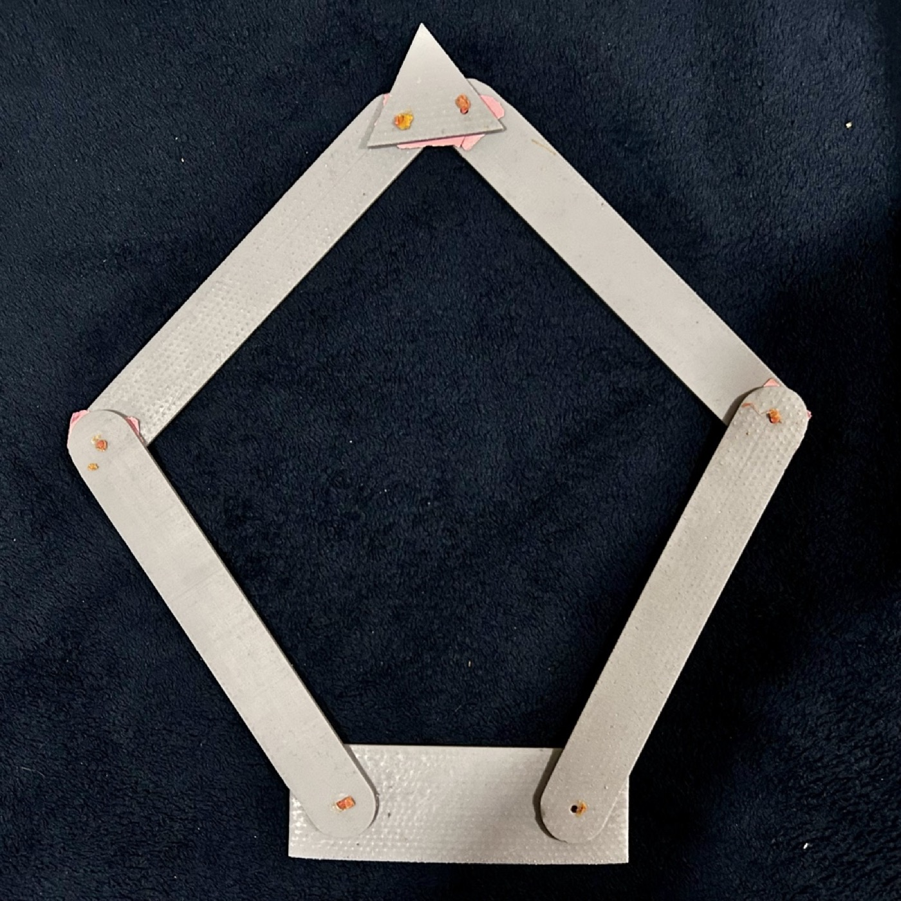

01
Advanced Digital Twins
VR Assembly Verification Tool
Engineered an immersive Unity environment to validate centrifugal pump assembly before physical build.
- C# Poka-Yoke logic prevented out-of-sequence assembly errors.
- Validated manufacturing sequence: Impeller to Cover.
- Used XR interaction to make assembly logic inspectable and trainable.